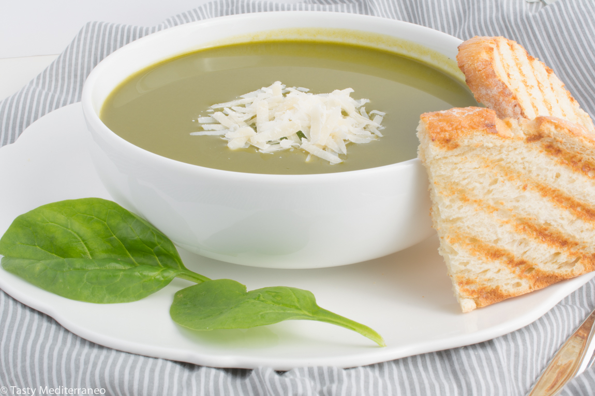

Supë me spinaq dhe oriz

Pershkrimi
Eshte nje recete tradicionale shume e shijshme e cila ja vlen te pergatitet. Ju befte mire
Perberesit
- 1 qepë
- 30 gr gjalp
- 500 gr spinaq/li>
- 1.5 litër lëng mishi
- 80 gr oriz
- 75 gram djathë parmixhano të grirë imët
- 1 vezë
- Kripe dhe piper
Pergatitja
- Zieni spinaqin për 2 minuta, shpëlajeni, shtrydheni dhe grijeni hollë.
- Në tenxheren ku keni shtuar lëngun e mishit shtoni edhe orizin. Lëreni të ziejnë përreth 15 minuta
- Gjatë kësaj kohe në një tigan shkrini gjalpin dhe kaurdisni qepën të grirë hollë deri sa ajo të zbutet dhe të jetë bërë transparente. Shtoni shumë pak ujë në të dhe vazhdoni ta trazoni deri sa uji të avullohet dhe qepa të jetë zbutur plotësisht.
- Shtoni spinaqin dhe e përzieni për 1 minutë. Pasi të kenë kaluar 12 minuta nga zierja e orizit, shtoni spinaqin të kaurdisur me qepën.
- Rrihni vezën me parmixhanon e grirë dhe i përzieni bashkë. Fikni zjarrin dhe e shtoni masën tek supa.
- Rregulloni shijen me kripë dhe piper sipas dëshirës. Shërbejeni supën të ngrohtë!